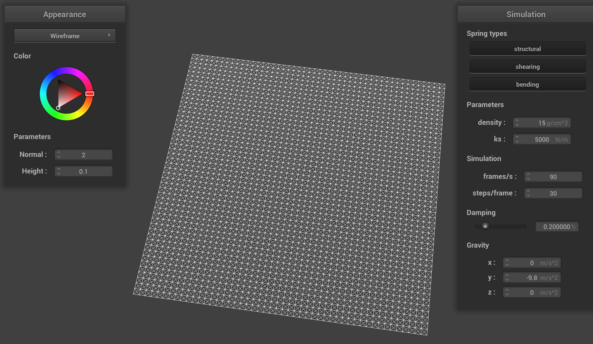
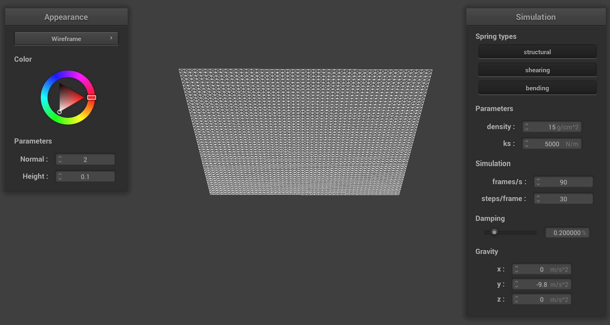

Overview
Give a high-level overview of what you implemented in this project. Think about what you've built as a whole. Share your thoughts on what interesting things you've learned from completing the project.
Part I: Masses and springs
Take some screenshots of scene/pinned2.json from a viewing angle where you can clearly see the cloth wireframe to show the structure of your point masses and springs.
|  |  |
Show us what the wireframe looks like (1) without any shearing constraints, (2) with only shearing constraints, and (3) with all constraints.

|

|

|
- NoShearing:We ran the cloth simulation using the pinned2.json scene and disabled the shearing constraints in the Cloth::simulateFrame function in cloth.cpp. The resulting wireframe displayed the cloth structure held together by the structural and bending springs, which maintain the cloth's shape and prevent it from stretching too much. The absence of shearing constraints allows for more flexibility in the cloth's deformation.
- OnlyShearing:In this case, we disabled the structural and bending constraints, leaving only the shearing constraints active. The cloth wireframe now exhibits a more flexible structure, as the shearing springs allow the cloth to deform diagonally. This results in a more realistic representation of how a cloth would behave in a real-world setting.
- WithAllConstraints:Finally, we enabled all the constraints (structural, shearing, and bending) in the Cloth::simulateFrame function. This wireframe represents the most comprehensive and accurate cloth simulation, incorporating all three types of constraints to provide a balance between rigidity and flexibility. The cloth behaves realistically, maintaining its shape while also deforming and bending as expected.
By taking screenshots of the cloth wireframe under these different constraints, we can demonstrate how the point masses and springs work together to simulate the behavior of a cloth. The comparison of the wireframes also helps in understanding the role each type of constraint plays in the overall simulation.
Part II: Simulation via numerical integration
Experiment with some the parameters in the simulation. To do so, pause the simulation at the start with P, modify the values of interest, and then resume by pressing P again. You can also restart the simulation at any time from the cloth's starting position by pressing R
- The effects of changing the spring constant ks: A very low ks value results in a cloth that is more elastic and less stiff. The cloth will stretch more under the influence of gravity, and it may take longer to reach a stable state.A high ks value makes the cloth stiffer and less elastic. It will stretch less under the influence of gravity and reach a stable state more quickly.
- For density:A lower density makes the cloth lighter, which results in less deformation under gravity and potentially faster stabilization. A higher density makes the cloth heavier, causing it to deform more under gravity and potentially take longer to reach a stable state.
- For damping:A lower damping value will cause the cloth to oscillate more before settling into its resting state, as there is less energy loss in the simulation. A higher damping value will cause the cloth to settle more quickly, as more energy is lost due to friction and heat during the simulation.
- For each of the above, observe any noticeable differences in the cloth compared to the default parameters and show us some screenshots of those interesting differences and describe when they occur.

|

|

|

|
Part III:Handling collisions with other objects
Show us screenshots of your shaded cloth from scene/sphere.json in its final resting state on the sphere using the default ks = 5000 as well as with ks = 500 and ks = 50000. Describe the differences in the results.

|

|

|
- With ks = 500, the cloth appear more elastic and drape more loosely over the sphere due to the lower spring stiffness, resulting in larger deformations.
- With ks = 5000 (default), the cloth exhibits a balance between elasticity and stiffness, conforming to the sphere's shape while maintaining its structure.
- With ks = 50000, the cloth is much stiffer, causing it to conform less to the sphere's shape and maintaining a more rigid appearance.
Show us a screenshot of your shaded cloth lying peacefully at rest on the plane. If you haven't by now, feel free to express your colorful creativity with the cloth! (You will need to complete the shaders portion first to show custom colors.)

Part IV:Handling collisions with other objects
Show us at least 3 screenshots that document how your cloth falls and folds on itself, starting with an early, initial self-collision and ending with the cloth at a more restful state (even if it is still slightly bouncy on the ground).

Vary the density as well as ks and describe with words and screenshots how they affect the behavior of the cloth as it falls on itself.
With lower density and lower ks, the cloth appears more elastic and loosely folded, as the lower stiffness allows for larger deformations and less resistance to self-collision. With higher density and higher ks, the cloth appears stiffer and maintain its structure more effectively, leading to smaller folds and a more rigid appearance. A combination of low/high density and high/low ks can produce varying behaviors that demonstrate the cloth's responsiveness to changes in these parameters.
Part V:Cloth Sim
Explain in your own words what is a shader program and how vertex and fragment shaders work together to create lighting and material effects.
A shader program is a set of specialized programs that run on a GPU, designed to manipulate vertex and pixel data to create various visual effects, such as lighting, texturing, and shading. Vertex shaders and fragment shaders work together in a shader program to generate these effects. The vertex shader processes individual vertices and can manipulate their position, color, and other attributes. The fragment shader, also known as the pixel shader, calculates the final color of each pixel based on the output from the vertex shader and other inputs, such as textures, lights, and material properties.
Explain the Blinn-Phong shading model in your own words. Show a screenshot of your Blinn-Phong shader outputting only the ambient component, a screen shot only outputting the diffuse component, a screen shot only outputting the specular component, and one using the entire Blinn-Phong model.
The Blinn-Phong shading model is a lighting model that approximates the appearance of surfaces by combining ambient, diffuse, and specular components. Ambient lighting represents the base level of light in the scene, independent of any light sources. Diffuse lighting depends on the angle between the surface normal and the light direction, simulating the scattering of light on a matte surface. Specular lighting creates shiny highlights on surfaces, depending on the angle between the viewer and the reflection of the light source. Provide screenshots of your Blinn-Phong shader outputting only the ambient component, only the diffuse component, only the specular component, and using the entire Blinn-Phong model.